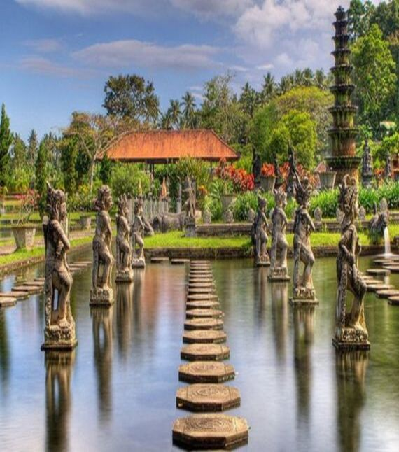

День 1
Автомобильная экскурсия
Обзорные экскурсии на Бали ознакомят вас с самыми интересными и значимыми местами на острове, среди которых главный по значимости храм Бесаких, храм Улан Дану, расположенный на священном озере Братан, легендарный храм среди волн Индийского океана Танах Лот, сердце острова Убуд, и другие места. Обзорные туры на острове Бали - непременный пункт в программе посещения острова. Самые популярные курорты острова: Кута, Санура и Семиньяк.
